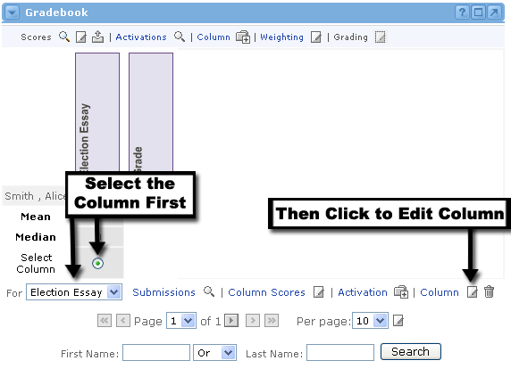
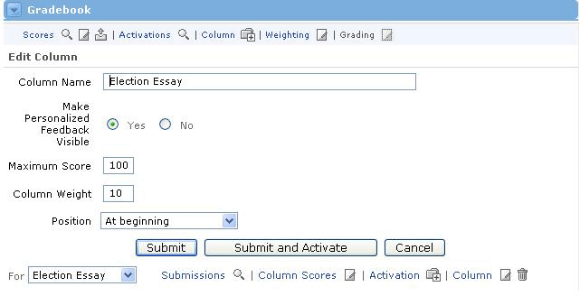

Edit Assignment Column Information
Editing a Column

After you have created a column in the Gradebook, you may later decide to change some of the information you provided. You can do this at any time. Just follow these steps:
- In the Gradebook channel, locate the column you would like to edit.
- Click the radio button beneath the column OR select the column from the drop-down menu at the bottom of the Gradebook channel. By selecting the column in either of these methods, the alternate method will automatically be selected as well.
- Once your column is selected, click the Column link or the Edit icon next to it at the bottom of the Gradebook channel.
- You will now see the column information in an editable form. Here you can make changes to the column details.
- When you are finished editing, click the Submit button.
- You should now see the Gradebook with the updated column.
